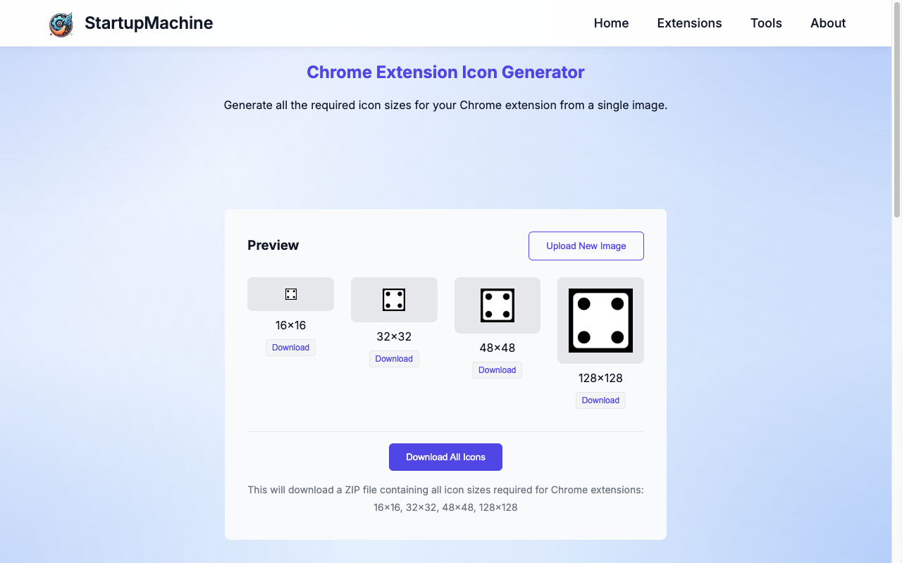

StartupMachine's Chrome Extension Icon Generator tool interface
When developing a Chrome extension or any browser add-on, your icon serves as the face of your product. It's the first thing users see in the Chrome Web Store and remains visible in their browser toolbar or menu. A well-designed, professional-looking icon can significantly impact user perception, installs, and overall success of your extension.
However, creating these icons comes with challenges. Chrome requires multiple icon sizes for different contexts, and ensuring each size looks crisp and professional can be time-consuming. This is especially true when you need to manually resize, export, and organize all the required formats.
Our Chrome Extension Icon Generator tool simplifies this process by allowing you to upload a single high-quality icon and automatically generating all the required sizes. In this comprehensive guide, we'll walk through the importance of extension icons, design principles, how to use our tool effectively, and best practices for implementing icons in your extension.
Why Icons Matter for Browser Extensions
Icons play a crucial role in the success of your browser extension for several reasons:
- First Impressions: In the crowded Chrome Web Store, your icon is often the first element users notice, forming their initial impression of your extension.
- Brand Recognition: A distinctive icon helps users recognize your extension quickly among others in their browser or store listings.
- Functionality Hint: Effective icons provide visual cues about what your extension does, helping users understand its purpose at a glance.
- Quality Perception: A polished, professional icon suggests a well-developed extension, building trust with potential users.
Did you know? According to research on conversion optimization, users make judgments about digital products within 50 milliseconds of seeing them. Your extension icon plays a significant role in that instant evaluation.
Chrome Extension Icon Requirements
Chrome requires multiple icon sizes to display your extension in different contexts:
- 16×16 pixels: Favicon and browser toolbar icon
- 32×32 pixels: Windows computers often use this size for shortcuts
- 48×48 pixels: Display in the Chrome Web Store and extension management page
- 128×128 pixels: Installation and Chrome Web Store main display
Google recommends providing icons in PNG format with transparency. The manifest.json file of your extension must reference these icons to ensure proper display across all contexts.
{
"manifest_version": 3,
"name": "My Extension",
"version": "1.0",
"icons": {
"16": "icons/icon16.png",
"32": "icons/icon32.png",
"48": "icons/icon48.png",
"128": "icons/icon128.png"
}
}Icon Design Principles
Creating effective extension icons requires attention to several key design principles:
Simplicity and Recognition
Keep your design simple and easily recognizable, especially at smaller sizes. Complex illustrations or text often become unreadable when scaled down to 16×16 pixels.
- Focus on a single, clear concept or symbol
- Avoid intricate details that will be lost at small sizes
- Use distinctive silhouettes that remain identifiable even at tiny dimensions
Scalability Considerations
Your icon needs to look good at multiple sizes without losing its identity or becoming blurry.
- Start with vector graphics when possible (SVG format)
- Design at the largest size first (128×128 pixels), then optimize for smaller sizes
- Consider creating slightly different versions for very small sizes, with simplified details
Different icon sizes required for Chrome extensions
Color and Contrast
Effective use of color and contrast ensures your icon remains visible in various contexts:
- Use colors that stand out against both light and dark browser themes
- Maintain good contrast between elements within your icon
- Consider using a limited color palette (2-3 colors) for clarity
- Test your icon against different backgrounds
Using the Chrome Extension Icon Generator Tool
Our tool simplifies the process of creating all required icon sizes from a single image. Here's how to use it:
Uploading Your Icon
-
Navigate to the Chrome Extension Icon Generator tool
The icon upload interface
-
Either drag and drop your icon image onto the upload area or click to browse your files
Best practice: Upload a high-resolution square image (at least 128×128 pixels) with a transparent background. SVG or PNG formats work best.
Previewing Different Sizes
After uploading, the tool automatically generates all required icon sizes:
- Review the preview of each generated size (16×16, 32×32, 48×48, and 128×128 pixels)
- Check that details remain clear and the icon is recognizable at all sizes
- If you notice issues, consider uploading a simpler version of your icon
Downloading Icon Sets
Once you're satisfied with the previews, you can download your icons:
- Click "Download All" to get a ZIP file containing all icon sizes
- Alternatively, download individual sizes using the download buttons beneath each preview
- Extract the downloaded files to your extension project directory, typically in a folder named "icons"
Note: All processing occurs in your browser. Your icon is never uploaded to our servers, ensuring complete privacy for your design.
Adding Icons to Your Manifest
After generating and downloading your icons, you need to reference them in your extension's manifest.json file:
{
"manifest_version": 3,
"name": "My Extension",
"version": "1.0",
"description": "A useful browser extension",
"icons": {
"16": "icons/icon16.png",
"32": "icons/icon32.png",
"48": "icons/icon48.png",
"128": "icons/icon128.png"
},
"action": {
"default_icon": {
"16": "icons/icon16.png",
"32": "icons/icon32.png"
},
"default_title": "My Extension"
}
}The "icons" section defines the extension's general icons, while the "action" section (for extensions with a browser action button) specifies which icons to use in the toolbar.
Best Practices for Extension Icons
-
Start with vector graphics: Vector formats (like SVG) scale much better than raster formats, maintaining crisp edges at all sizes.
-
Use transparent backgrounds: This ensures your icon adapts well to different browser themes and backgrounds.
-
Test against different backgrounds: Verify your icon is visible on both light and dark surfaces.
-
Follow Google's design guidelines: Align with Material Design principles for a look that fits well within the Chrome ecosystem.
-
Avoid text in icons: Text becomes unreadable at smaller sizes and doesn't translate well internationally.
-
Consider adaptive icons: For newer extensions, you might want to provide different versions for light and dark modes.
Troubleshooting Icon Issues
If you encounter problems with your extension icons, here are common solutions:
-
Blurry icons: Ensure you're using the exact pixel dimensions required without browser scaling. If designing in Photoshop or similar tools, use "Save for Web" options.
-
Icons not appearing: Verify your manifest.json references the correct file paths. Paths are relative to the extension directory.
-
Icons look different in store vs. browser: Chrome may apply different processing to icons in different contexts. Test your icon in all environments.
-
Details lost at small sizes: Simplify your design for smaller icon versions, or manually optimize the 16×16 pixel version.
Conclusion
A well-designed icon is essential for a successful Chrome extension. It serves as your extension's visual identity, helping it stand out in the Chrome Web Store and providing users with a recognizable presence in their browser.
By understanding the icon requirements, following good design principles, and using our Chrome Extension Icon Generator tool, you can create a professional set of icons without the hassle of manually resizing and exporting multiple versions.
Whether you're a developer with limited design experience or a designer looking to streamline your workflow, our tool makes the icon creation process simple and efficient, allowing you to focus on building a great extension.
Ready to Create Your Extension Icons?
Try our Chrome Extension Icon Generator now to quickly create all the icon sizes you need for your browser extension.
Try Icon Generator